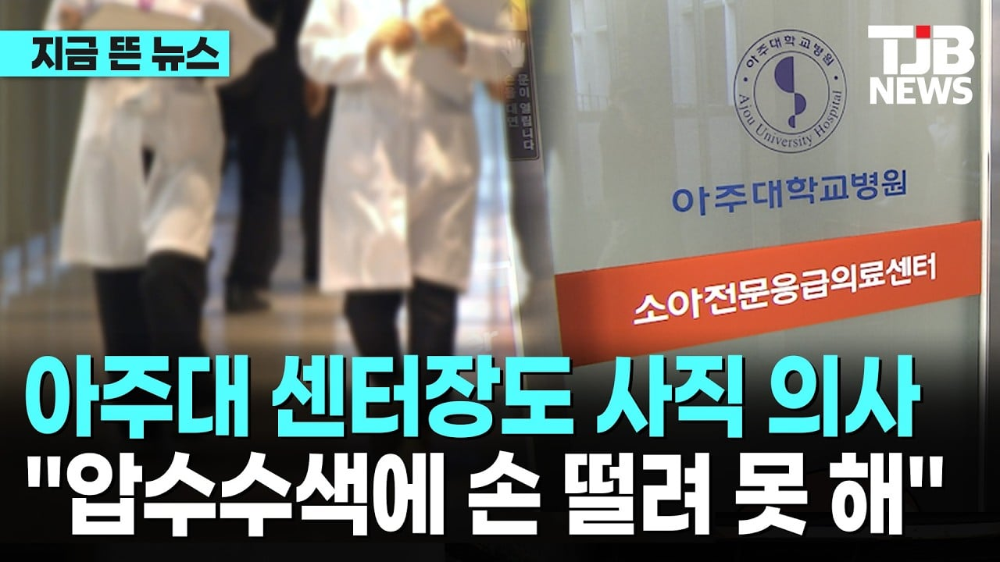

경찰이 끝까지 사과안하는거 보고 사직결심했다함.
경찰은 사과대신 안타깝다는 말만 반복
이제 아주대 소아응급실은 역사속으로 사라짐

경찰이 끝까지 사과안하는거 보고 사직결심했다함.
경찰은 사과대신 안타깝다는 말만 반복
이제 아주대 소아응급실은 역사속으로 사라짐
하여간 이런 본인이 깨어있는줄아는 쿨찐 키보드워리어 색기들은 그냥 서버격리같은거 없나...밖에 나가본적도 없고 주변지인들도 없으니 1차원적이네ㅋㅋㅋ
ㅈ됐음 걍 ㅋㅋㅋㅋㅋㅋㅋㅋ
경찰이 뭐 대단한 놈들도 아니고 시키는대로 하는 새끼들인데 사과를 왜시켜, 이새끼들은 사과 시켜봐야 지들이 뭐 되는줄알고 나대기만 해서 걍 냅둬야 하고 우즈백 부모가 사과를 해야지
경찰의 문제는 저렇게 진료실에 압수수색을 안하고 사전에 다 행정적으로 처리할수 있었는데 보여주기식으로 압수 들어간게 문제임. 심지어 저 판단을 내린 상급자는 보직받고 2~3일만에 저 판단을 내린거고 저 영장도 나온지 한참전에 나왔음
지금 의사들도 우즈벡 부모 비판하는게 아닌데 뭔 우즈벡 타령임?
심정지인 애 옆방에서 소생중인데 비용은 이미 많이 나왔고 애는 어차피 죽은것 같으니까, 옆에서 소생중인데 복도로나와서 경찰에 의료과실로 자기 애가 죽었다고 신고함
이정도면 비판할만 하지?
인간이면 하면 안되는 짓을 한건데 오히려 외국인이라고 쉴드쳐주는 애들이 있어
의료소송은 병원비 협상용 카드로 외국인들에게조차 꿀팁이 되었다는 거
고소 할 수 있지 근데 그게 바로 압수 수색으로 이어진 타임라인 자체가 이상한데
애초에 심정지 상태로 실려온거 살리려고 한게 저렇게 이어지는게 맞는거냐?
길가다 심정지 환자 있어서 일반인이 선의로 심폐소생술 했다 죽으면 경찰서 가는게 당연한 세상이 오겠는데 ㅋㅋㅋ
여기 좆장애인 저지능새끼들은 응급실이 식당정도라고 생각하나봐
하루에도 수십명도 죽어가는 응급실에서 사람 죽었다고 압색하면 응급환자는 어케 보라고 ㅋㅋㅋ
의사라는 집단이 밥그릇싸움 ㅈㄴ하면서 아닌척하는거 ㅈㄴ티나서 개짜치고
화물노조마냥 같이 휴학 안한다고 지애미 저지능 창녀인증하며 악취 ㅈㄴ풍기고 ㅈㄹ하는건 ㅈㄹ하는건데
저건 개인이 ㅈ같아서 때려친다는데 ㅈㄹ하는게 ㅈ병신이지 ㅅㅂ
이건 중국 싫다고 중국 대협이 속세를 접고 산속으로 들어간다는 말에 '응~ 짱DOG 꺼져~'하는건데
ㄹㅇ 저게 어디서 지령받고 행동하는것도 아니고
얼마나 ㅈ같으면 개인이 그만하겠다 하는거로
무슨 파업이라도 하는거마냥 비꼬더라
생명을 내치고 일을그만두냐! 이지랄함ㅋㅋ
그 저 열 등 감
너네 무슨 공익을 위해 의사 욕하는 거 아니잖아 ㅋㅋㅋ
아니 도대체 압색하면 뭐가나오길래 ㄷㄷ
경찰에서 응급으료 12조 위반한거 아니였나
아주대 담당 관할 견찰은 왈왈 짖어라 사람아이다
수원남부경찰서 혹은 경기남부지방경찰청
견찰 자식들 응급실뺑뺑이 돌면 정신차리겠지
ㄴㄴ 뺑뺑이 돌면 압수수색 들어가고 또 대량 사직하겠지
뺑뺑이 돌리면 처벌하기로 했잖슴
그럼 응급실 법적 최소화 하겠지 처벌이 능사는 아니니까 물리적으로 불가능한 상황이면 대기시키고 치료 못해도 그만인거지
??? : 사명감이 어저구 저쩌구.. 의새들.. 증원해야한다...
이번 9월에 고려대 안암병원에 소아응급실이 신설되었다고 함. 그래도 소아 응급실 신경쓰는 병원들은 아직 있다. 경기도는 ㅈ됐지만...
거기도곧 압수
아직도 사직 안 했네
지금 여론은 중요하고 훌륭한 분들에게는 법이 적당히 적용 되는 게 맞다는 거지?
의사 기싸움한다고 욕하시는 사람들은 정말 소아과 망해서 없어져도 책임지실 거 아니잖아
소아과는 기피과잖아.. 아이 고쳐줄 사람이 없다고 정말로..
결국 답은 AI가 더 빨리 발전하는 것 뿐이다
젊은 소아과 전문의도 많이 없어져가는듯
소아과 중환자실같은데 나이많은 교수들만있지 젊은 전공의나 인턴이나 레지던트 거의 못본거같은데
휴 의새들 진짜
ㅋㅋ끝까지 뭐가 문제인지 모르네
응급실 특수성 하나도 이해 못하네
의사라는 직업에 뭔가 모를 시기 질투같은게 있어 보이는 댓글도 보이고
법잘알인척 꼴깝떠는 댓글도 보이고
사명감으로 하는 직업에게
그 사명을 빼앗아버렸으니
뭐하러 하겠냐
그냥 돈 되는 거 하지
하 댓글 븅신들 진짜 개많네 ㅋㅋ
저건 의사로써의 사명감 한큐에 부정당하니까 현타 온 케이스 아니냐
의사분들 힘드시니까 의대 정원 늘려서 인력충원좀 해드려야겠다
예?? 그건 절대 안된다고요~?!
환자는 만들어서 공급할거죠?
의대 전공서 찍어내듯이?
가족이 아프면 명의가 누군지 검색 같은거 안하고 걍 '의대 졸업자' 라도 기꺼히 맡기실 거죠?
늘어난 의대생들도 경험을 해야 전문의가 되니깐
진짜 이거 문제임...
우리 지역에 달빛병원이라고 있기는 한데
여기도 전문의가 아니라 주먹구구식으로 운영 할 수 밖에 없더라 이 부분은 국가가 나서서 보완책을 세워야지
기독병원 같은 곳이 아니면 소아과 가기도 진짜 박터지더라
여튼 일본이 그런거 잘 하던데 벤치마킹하기도 어려울까?
몇년전에 본 영상이라 정확하진 않은데 소아과나 응급의 같은 것을 의무적으로 이행해야 한다고 본거 같음..
이제 돌지난 딸래미 키우고 있는데 응급상황 생기면 솔직히 불안하긴 함
그나마 전남대 병원이 수도권 서울지역보다 응급환자 잘 받아주고 그런다고 해서 조금이나마 안심이긴 한데 장기적으로 본다면 이런 법적인 불안에서 벗어나게 또한 의사들의 과실에 대한 응당한 처벌도 병행해서 보완해야 한다고 봄 당연히 의사 충원도 감당해야지...
간단함 그냥 필수과 애들 돈 더주면됨. 과실에대한 응당한 처벌을 원하면 그만큼 의료비를 더내면됨. 근데 싫지?
그리고 뭔 자꾸 증원증원 에휴 시발
그냥 긁거나 드립치려고 무지성증원 드립치는애들은 그냥 의도가뻔해서 무시하면되는데
너는진짜 멍청함 그자체다그냥
명문가 애인 거 아님? 나라가 의료민주화 로봇이라도 개발된 것처럼 가네
아주대....아씨
특히 소아과의사들은 사명감으로 하고있는 수준이라 들었는데 그걸 괴롭히네;
아무리 그래도 압색 한번에 부서를 없애버리냐
담당 의사들이 사직해서 유지를 할 수가 없게 된 것
본인부터가 뇌피셜싸고 시작하는데요
재직중일때 명백히 불법인점 있으면
당연 처벌하는게 맞지 뭔소리야
그런데 병원은 부활신전인데 부활 못시킴 죄
이딴 걸로 사람이 죽었으니 무조건 책임지고
태워죽일사람 만들고 있으니
기피과 된거지 노리스크 하이리턴 과가
있는데 바이탈을 왜감?
니가 한 말은 사직 이후에도 '니가 1년전에 일했던 병원에서 사람이 죽었는데 그만둬서 사람없어서 죽음 고로 니 책임임'
이걸로 밖에 안 읽힘
화 가라 앉히고 내가 쓴 글이랑 경찰 비유같은게
적절한 예시였나 곰곰히 생각해보렴